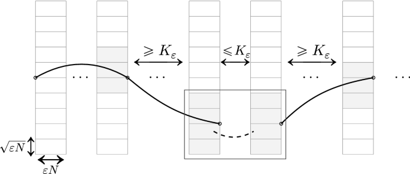
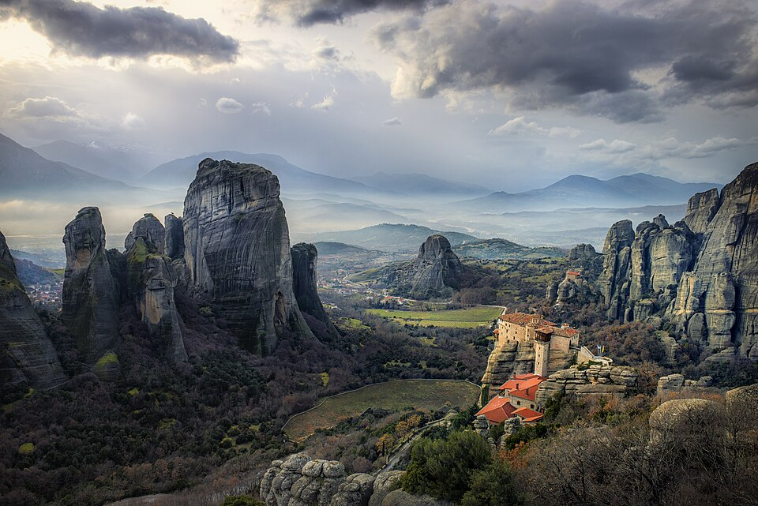

Overview
The critical two-dimensional stochastic heat flow arises as the scaling limit of directed polymer partition functions in the critical window. A renormalized Cole–Hopf transformation of the flow gives the critical two-dimensional Kardar–Parisi–Zhang (KPZ) process. Caravenna, Sun and Zygouras · Berger et al.



Contributors
- Simon Gabriel (UC Berkeley)
- Nikos Zygouras (University of Warwick)
Purpose
This site and the accompanying repository provide a place to develop and share our understanding of these results. We aim to bring together expositions and formalisations, and to explore further directions as a community.